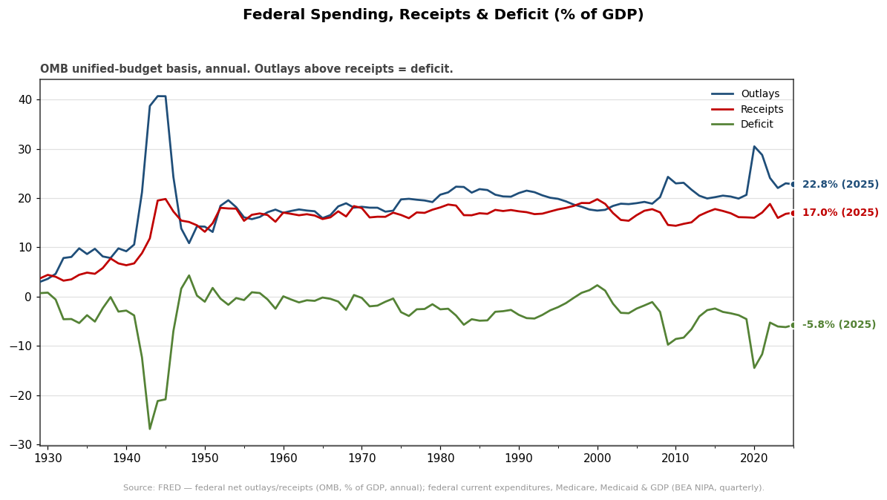
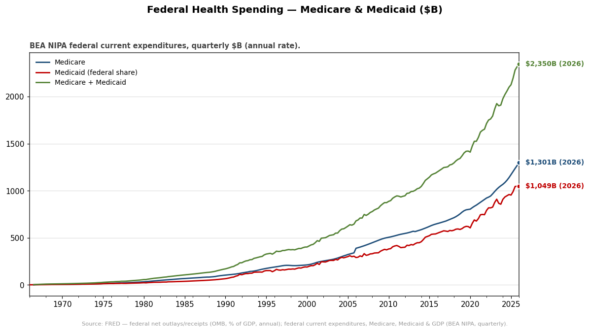
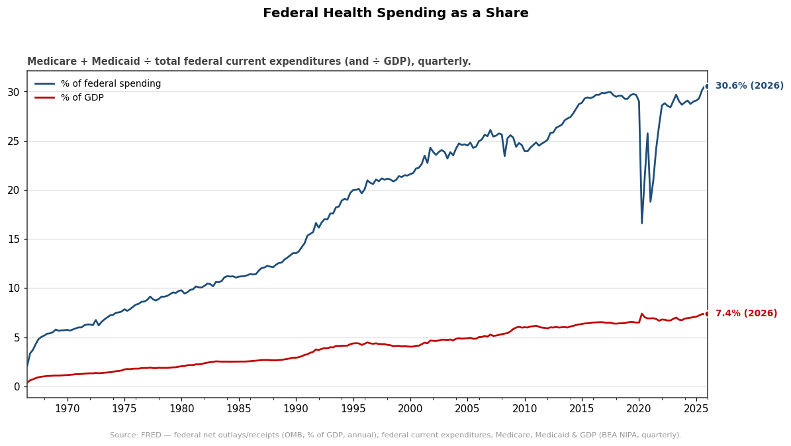

Total federal outlays vs receipts as a share of GDP; the gap is the deficit. Latest outlays 22.8% of GDP (2025).

The two largest federal health programs, quarterly (SAAR). Latest: Medicare $1,301B, Medicaid $1,049B.

Medicare + Medicaid as a % of total federal spending and of GDP — the growing wedge. Latest: 30.6% of federal spending, 7.4% of GDP.
